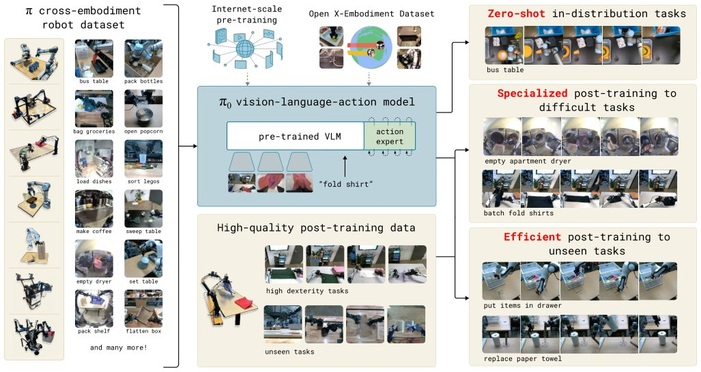

$π_0$: A Vision-Language-Action Flow Model for General Robot Control
Generated by JarvisForResearchers Bot on 2026-05-04
TL;DR
$\pi_0$ introduces a generalist robot policy architecture that integrates a pre-trained Vision-Language Model (VLM) backbone with a conditional flow matching action expert. This design enables the model to perform complex, dexterous tasks by modeling continuous action distributions, moving beyond the limitations of autoregressive action discretization prevalent in prior VLA models.
The Problem
The path toward deploying generalist robotic systems in unstructured, real-world environments is significantly impeded by limitations in data scale, generalization capacity, and control robustness. Current methodologies often fail to capture the physically situated versatility inherent in human performance. Specifically, existing Vision-Language Action (VLA) models frequently rely on autoregressive discretization to represent actions, a formulation that introduces substantial challenges when attempting to model the high-frequency dynamics required for dexterous manipulation. Furthermore, prior robotic learning efforts have typically been constrained by small-scale datasets, often involving only tens or hundreds of trajectories, which is insufficient for training foundation models capable of broad generalization. A critical gap exists in unifying large-scale pre-training paradigms with the necessary architectural components required for high-frequency, dexterous control within a single, cohesive framework.
Key Contributions
This work makes three primary contributions: 1. The proposal of a novel generalist robot policy architecture that leverages VLM pre-training in conjunction with flow matching. 2. An empirical investigation into effective pre-training and post-training recipes tailored for such robot foundation models. 3. A demonstration of a level of dexterity and generality that substantially surpasses the capabilities exhibited by previously reported robot foundation models.
How It Works

Fig. 1: Our generalist robot policy uses a pre-trained vision-language model (VLM) backbone, as well as a diverse cross- embodiment dataset with a variety of dexterous manipulation tasks. The model is adapted to robot control by adding a separate action expert that produces continuous actions via fl$\pi_0$ is constructed by leveraging a pre-trained Vision-Language Model (VLM) backbone, initialized using PaliGemma, to assimilate Internet-scale semantic knowledge. To facilitate the generation of continuous, high-frequency actions, the VLM is augmented with a distinct action expert. This expert employs conditional flow matching to model the continuous distribution of actions. The training regimen is multi-staged: an initial large-scale pre-training phase is conducted on a mixture of dexterous manipulation datasets (sourced from 7 robot configurations and 68 tasks) alongside the OXE dataset. This is followed by a post-training phase utilizing high-quality, curated data specific to downstream tasks. This architectural and training design permits the model to effectively manage complex, temporally extended tasks.
VLM backbone
This component is initialized from PaliGemma. Its function is to embed the robot's image observations into the same latent embedding space utilized by the language tokens, thereby inheriting a broad base of general semantic knowledge from the pre-training corpus.
Action expert
This is a separate component, possessing 300M parameters and initialized from scratch. It is responsible for generating continuous action distributions by implementing conditional flow matching.
Observation input ($o_t$)
The observation input at time $t$ is a composite structure. It comprises multiple RGB images ($I^t_1, ..., I^t_n$), a sequence of language tokens ($\ell_t$) that encode task instructions, and the robot's proprioceptive state ($q_t$).
Action chunk ($A_t$)
The action chunk, $A_t$, represents a sequence of future actions: $(a_t, a_{t+1}, ..., a_{t+H-1})$. The horizon $H$ is fixed at 50 for the tasks considered.
Results
The empirical evaluation demonstrates the scale and scope of the training regimen:
| Metric | Value | Baseline | Source |
|---|---|---|---|
| Pre-training data scale | over 10,000 hours of robot data | N/A | Section V |
| Robot configurations used in pre-training | 7 different robot configurations | N/A | Section III |
| Tasks in pre-training | 68 tasks | N/A | Section III |
Why This Matters
The findings suggest that for developing generalist robot policies, the combination of a pre-trained VLM backbone with a flow matching action expert constitutes a viable paradigm for achieving high-frequency, dexterous control. Furthermore, the necessity of a multi-stage training recipe—pre-training on diverse, large-scale data followed by post-training on high-quality, curated data—is critical for simultaneously attaining broad capability and high-performance dexterity. This framework inherently supports cross-embodiment training, meaning a single learned model can be adapted to control heterogeneous robot platforms, including single-arm, dual-arm, and mobile manipulators.
Limitations & Open Questions
The complexity of the $\pi_0$ architecture necessitates a deep understanding of how flow matching is integrated with the VLM structure. While the framework is designed to be compatible with various base pre-trained VLMs, the implementation detailed in the work utilizes PaliGemma as the specific backbone. Future work should investigate the sensitivity of the flow matching objective to the specific latent space structure provided by different VLM backbones.
Citation
Paper: 2410.24164
@article{241024164,
title = {$π_0$: A Vision-Language-Action Flow Model for General Robot Control},
author = {Kevin Black and Noah Brown and Danny Driess and Adnan Esmail and Michael Equi and Chelsea Finn et al.},
journal = {arXiv preprint arXiv:2410.24164},
year = {2024},
url = {https://arxiv.org/abs/2410.24164}
}